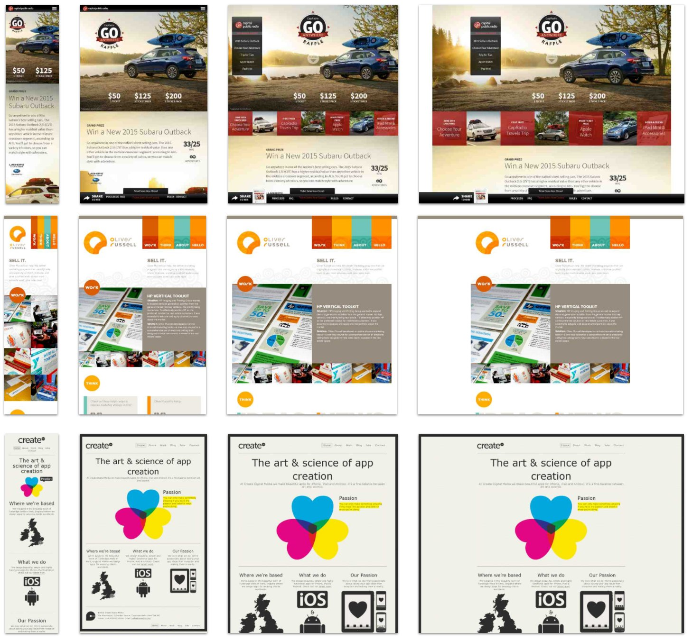

1. RWD questions:
What is the purpose of the RWD? Why it is used? How things are done before RWD? What is the difference?
Responsive web design allows pages to change according to the platform they are viewed on. And now that everybody has smartphones, tablets and even screen sizes can be massive, it is in the high demand. Before the RWD tricks that are used nowadays various sites had separate mobile pages, for example. Another way about it is having different code prepared for the different screen resolutions.
How css media queries can help you building responsive web sites?
You can have css presets for different window sizes that helps you to tweak the page accordingly.
Why to use em (font) based sizing for example margins?
The scalability is good for various platforms, so it is used in creation of RWD. However, percent (%) is another good alternative.
Article is already 7 years old, do we have any new technology which can be used to achieve same type of UI responsiveness as described in the article. Buzz words: (CSS Grid, Flexbox)
Going straight to the buzz words, CSS Grid is a module that makes a grid-like layout with columns and rows. As a “table” with elements it scales easily. Flexbox is another type of layout that acts as a flexible box of sorts that contains elements and stretches or shrinks if needed. There are a lot of different frameworks that allow for responsiveness, such as Bootstrap, Material UI, Pure, Foundation, Skeleton, etc.
2. RWD examples:
Some thoughts on this lab:
- Nothing here that we haven't done before, except flex maybe. It's pretty nifty. Don't have much to say, tasks took time, but they weren't all that hard.
- Mediaqueri website has some security issues apparently, so there's that.
- The list is already pretty responsive, so I don't see how I can improve it in that regard.
-Dmitrii